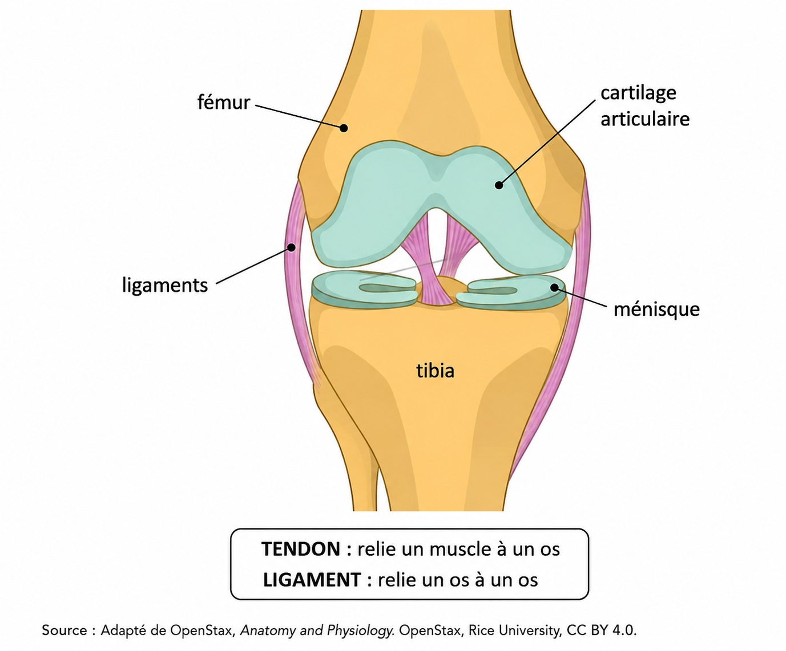

Réglages d’affichage
Muscles, tendons, os : l'appareil musculo-squelettique
Classer les os, décrire la structure d'un os long, expliquer comment un mouvement se produit, distinguer les principales lésions de l'appareil musculo-squelettique et énoncer les mesures qui les préviennent.
Ce que tu sauras faire à la fin
- Classer un os selon sa forme.
- Décrire la structure d'un os long et le rôle du cartilage de croissance.
- Expliquer comment un muscle produit un mouvement.
- Indiquer ce dont un muscle a besoin pendant l'effort et après l'effort.
- Nommer les éléments d'une articulation et distinguer le tendon du ligament.
- Identifier une lésion à partir de ses signes et proposer des mesures de prévention.
Séance 1
Les formes d'os
Objectif : Classer les os selon leur forme.
La situation
Bastien passe la visite médicale de début d'année. Le médecin regarde la radiographie de son poignet.
« Ces petits os du poignet sont des os courts. Votre fémur, lui, est un os long. Les os n'ont pas tous la même forme. »
Bastien répète la phrase à Maëva, au gymnase. Aucun des deux ne sait combien de formes d'os existent, ni à quoi sert cette distinction.
DOC. 1 — Le squelette humain
![Schéma du squelette humain vu de face. Six os seulement sont coloriés et légendés. En bleu uni, trois os longs : le fémur, le tibia et l'humérus. En vert à points, les os du poignet, qui sont des os courts. En orange à rayures, deux os plats : le sternum et la scapula, aussi appelée omoplate. Un encart en haut à droite montre la scapula seule, vue de dos. Sous le squelette, une légende en trois lignes donne le critère de chaque catégorie : os longs, nettement plus longs que larges ; os courts, à peu près aussi longs que larges et épais ; os plats, minces et larges.](images/schema_squelette_trois_categories.jpg)
Description écrite du document
Schéma du squelette humain vu de face. Six os seulement sont coloriés et légendés. En bleu uni, trois os longs : le fémur, le tibia et l'humérus. En vert à points, les os du poignet, qui sont des os courts. En orange à rayures, deux os plats : le sternum et la scapula, aussi appelée omoplate. Un encart en haut à droite montre la scapula seule, vue de dos. Sous le squelette, une légende en trois lignes donne le critère de chaque catégorie : os longs, nettement plus longs que larges ; os courts, à peu près aussi longs que larges et épais ; os plats, minces et larges.
Source : Larousse, encyclopédie médicale, article « os ». Illustration générée par IA.
1. À partir du document 1 :
Un indice
Les trois catégories sont écrites dans la légende, sous le squelette, dans le document 1.
Le corrigé
- Os longs.
- Os courts.
- Os plats.
Explication
La démarche
La légende du document 1 donne les trois noms, l'un sous l'autre. Il suffit de les recopier.
L’erreur fréquente
Écrire un nom d'os à la place d'une catégorie, par exemple « fémur » au lieu de « os longs ».
| Élément | Catégorie |
|---|---|
| Le fémur | |
| Les os du poignet | |
| Le sternum | |
| L'humérus | |
| La scapula | |
| Le tibia |
Un indice
Chaque os colorié du document 1 porte une étiquette qui donne sa catégorie.
Le corrigé
- Os longs : le fémur · l'humérus · le tibia
- Os courts : les os du poignet
- Os plats : le sternum · la scapula
Explication
La démarche
Chercher l'os sur le squelette, regarder sa couleur, puis lire la légende. Le bleu, c'est long ; le vert, c'est court ; l'orange, c'est plat.
L’erreur fréquente
Classer la scapula parmi les os longs parce qu'elle est grande. La scapula est large et mince, comme une assiette : c'est un os plat.
Un indice
Le critère de chaque catégorie est écrit dans la légende, sous le squelette.
Le corrigé
- Parce qu'ils sont à peu près aussi larges que longs. Un os long est nettement plus long que large.
Explication
La démarche
Comparer la longueur et la largeur de l'os. Un os du poignet ressemble à un petit dé ; le fémur ressemble à un manche de pelle.
L’erreur fréquente
Répondre « parce qu'ils sont petits ». Une phalange de doigt est petite elle aussi, et c'est pourtant un os long : ce n'est pas la taille qui compte, c'est la forme.
Le lexique de la séance 1
- Os long
- Os nettement plus long que large, comme le fémur.
- Os court
- Os à peu près aussi long que large et épais, comme un os du poignet.
- Os plat
- Os mince et large, comme le sternum.
Auto-évaluation de la séance 1
1. Le fémur est un os court. Répondre en cochant une case.
Le corrigé. Faux
Explication. Le fémur est l'os de la cuisse : il est nettement plus long que large.
2. Indiquer la catégorie du sternum, en cochant une seule case.
Le corrigé. Un os plat
Explication. Le sternum est mince et large, au milieu de la poitrine.
3. Indiquer la catégorie qui n'existe pas, en cochant une seule case.
Le corrigé. Les os ronds
Explication. Le document 1 ne donne que trois catégories : longs, courts et plats.
4. Citer un exemple d'os court, en rédigeant une phrase.
Le corrigé. Un os du poignet.
Explication. Les os du poignet sont les seuls os courts du document 1.
Score : —
Séance 2
L'intérieur de l'os et la croissance
Objectif : Décrire la structure d'un os long et expliquer le rôle du cartilage de croissance.
La situation
À la fin de la visite, le médecin ajoute une phrase que Bastien n'a pas comprise.
« Vos cartilages de croissance sont encore ouverts. Vos os ne sont pas terminés. Vous pouvez faire de la musculation, mais avec des charges adaptées. »
Bastien ne voit pas ce qu'un os « non terminé » peut vouloir dire. Maëva non plus.
DOC. 2 — La structure d'un os long
![Schéma d'un fémur coupé dans sa longueur. Cinq éléments sont légendés. Une accolade à gauche désigne la diaphyse, la partie centrale allongée. Deux accolades désignent les épiphyses, les deux extrémités renflées. La paroi de la partie centrale est en gris foncé : c'est l'os compact. L'intérieur des deux extrémités est clair et rempli de petites alvéoles : c'est l'os spongieux. Entre la partie centrale et chaque extrémité, un trait vert discontinu représente le cartilage de croissance, avec la mention : ouvert jusqu'à la fin de la croissance. Un encart à droite agrandit côte à côte l'os compact, dense, et l'os spongieux, alvéolaire.](images/schema_os_long_coupe.jpg)
Description écrite du document
Schéma d'un fémur coupé dans sa longueur. Cinq éléments sont légendés. Une accolade à gauche désigne la diaphyse, la partie centrale allongée. Deux accolades désignent les épiphyses, les deux extrémités renflées. La paroi de la partie centrale est en gris foncé : c'est l'os compact. L'intérieur des deux extrémités est clair et rempli de petites alvéoles : c'est l'os spongieux. Entre la partie centrale et chaque extrémité, un trait vert discontinu représente le cartilage de croissance, avec la mention : ouvert jusqu'à la fin de la croissance. Un encart à droite agrandit côte à côte l'os compact, dense, et l'os spongieux, alvéolaire.
Un os n'est pas une pièce morte. Il est vivant et il se renouvelle en permanence.
Un os long comporte une partie centrale allongée, la diaphyse, et deux extrémités renflées, les épiphyses.
L'os compact est dense. Il forme la paroi de la diaphyse. C'est lui qui donne à l'os sa résistance.
L'os spongieux est fait d'alvéoles. Il occupe les épiphyses. Il amortit les chocs et il allège l'os.
Entre la diaphyse et l'épiphyse se trouve le cartilage de croissance. Tant qu'il est ouvert, l'os continue de s'allonger. Il se referme à la fin de la croissance. C'est une zone plus fragile que le reste de l'os. Les charges lourdes et les chocs répétés peuvent l'abîmer.
L'os s'adapte aux efforts qu'il subit. L'os d'un sportif est plus résistant que celui d'une personne qui reste alitée.
Source : Larousse, encyclopédie médicale, article « os ». Illustration générée par IA.
1. À partir du document 2 :
| Élément | Aspect ou emplacement |
|---|---|
| Diaphyse | |
| Épiphyses | |
| Os compact | |
| Os spongieux |
Un indice
Chaque réponse se trouve dans une phrase du document 2, dans l'ordre du texte.
Le corrigé
- Diaphyse : partie centrale allongée
- Épiphyses : extrémités renflées
- Os compact : dense
- Os spongieux : alvéoles
Explication
La démarche
Lire le document phrase par phrase et vérifier que le mot choisi convient. L'os compact est plein, comme un manche de sécateur. L'os spongieux est percé de trous, comme une éponge sèche : il est léger et il amortit.
L’erreur fréquente
Placer « dense » sur la ligne de l'os spongieux. Sur le schéma, l'os spongieux est celui qui est rempli de petites alvéoles, dans les deux extrémités.
Un indice
Le cartilage de croissance est représenté par les deux traits verts du schéma, et décrit dans l'avant-dernier paragraphe du document 2.
Le corrigé
- Zone située entre la diaphyse et l'épiphyse, qui permet à l'os de s'allonger tant qu'elle est ouverte.
Explication
La démarche
Une définition dit d'abord où se trouve la structure, puis à quoi elle sert. Le cartilage de croissance est comme le chantier au bout de l'os : tant qu'il est ouvert, l'os continue de s'allonger ; quand il ferme, la croissance est terminée.
L’erreur fréquente
Ne donner que le rôle, sans dire où se trouve le cartilage de croissance.
Un indice
La dernière phrase de l'avant-dernier paragraphe du document 2 indique ce qui peut abîmer cette zone.
Le corrigé
- Parce que le cartilage de croissance est une zone plus fragile que le reste de l'os. Des charges trop lourdes peuvent l'abîmer avant la fin de la croissance.
Explication
La démarche
Relier la fragilité de la zone à la nature de l'effort. Tant que le cartilage est ouvert, l'os est comme du béton qui n'a pas encore fini de sécher : il supporte moins bien les charges lourdes.
L’erreur fréquente
Conclure que la musculation est interdite. Bastien peut continuer : ce sont les charges excessives et les gestes mal exécutés qui posent problème, pas la musculation elle-même.
Le lexique de la séance 2
- Diaphyse
- Partie centrale allongée d'un os long.
- Épiphyse
- Extrémité renflée d'un os long.
- Cartilage de croissance
- Zone qui permet à l'os de s'allonger, ouverte jusqu'à la fin de la croissance.
Vocabulaire d’appui
- Os compact
- Tissu osseux dense qui forme la paroi de la diaphyse.
- Os spongieux
- Tissu osseux fait d'alvéoles, situé dans les épiphyses.
Auto-évaluation de la séance 2
1. Indiquer où se trouve l'os spongieux, en cochant une seule case.
Le corrigé. Dans les épiphyses
Explication. C'est la zone claire remplie d'alvéoles, aux deux extrémités du schéma.
2. Un os dont le cartilage de croissance est fermé peut encore s'allonger. Répondre en cochant une case.
Le corrigé. Faux
Explication. Quand le cartilage se referme, l'os a atteint sa longueur définitive.
3. Indiquer le tissu qui donne sa résistance à l'os, en cochant une seule case.
Le corrigé. L'os compact
Explication. C'est le tissu dense qui forme la paroi de la partie centrale.
4. Indiquer le rôle du cartilage de croissance, en rédigeant une phrase.
Le corrigé. Il permet à l'os de s'allonger.
Explication. C'est ce rôle qui explique pourquoi cette zone est présente tant que la croissance n'est pas terminée.
Score : —
Séance 3
Le muscle et le mouvement
Objectif : Expliquer comment un mouvement se produit et nommer les muscles agoniste et antagoniste.
La situation
Bastien travaille le curl biceps avec des haltères. Maëva l'observe.
« Quand tu remontes l'haltère, ton biceps se contracte, ça se voit. Mais quand tu redescends, qu'est-ce qui le fait redescendre ? »
Bastien répond ce qu'il a lu quelque part : « Le muscle est élastique, il revient tout seul. »
Maëva n'est pas convaincue : « Si c'était seulement l'élasticité, tu ne pourrais pas contrôler la descente. Or tu la contrôles. »
DOC. 3 — Flexion et extension du bras
![Schéma en deux vignettes superposées. Vignette du haut, titrée FLEXION : un bras droit vu de profil, l'avant-bras remonté. Le biceps, situé à l'avant du bras, est court, épais et colorié en rouge : il est contracté. Le triceps, situé à l'arrière, est long, fin et gris clair : il est relâché. L'humérus, le radius et l'ulna sont légendés, ainsi que les tendons aux deux extrémités des muscles. Une flèche noire part du tendon du biceps vers l'os, avec la mention : le tendon tire sur l'os. Un encadré indique : muscle agoniste, le biceps ; muscle antagoniste, le triceps. Vignette du bas, titrée EXTENSION : le même bras, l'avant-bras abaissé. Cette fois le triceps est court, épais et rouge, le biceps est long, fin et gris clair. L'encadré indique : muscle agoniste, le triceps ; muscle antagoniste, le biceps.](images/schema_flexion_extension_bras.jpg)
Description écrite du document
Schéma en deux vignettes superposées. Vignette du haut, titrée FLEXION : un bras droit vu de profil, l'avant-bras remonté. Le biceps, situé à l'avant du bras, est court, épais et colorié en rouge : il est contracté. Le triceps, situé à l'arrière, est long, fin et gris clair : il est relâché. L'humérus, le radius et l'ulna sont légendés, ainsi que les tendons aux deux extrémités des muscles. Une flèche noire part du tendon du biceps vers l'os, avec la mention : le tendon tire sur l'os. Un encadré indique : muscle agoniste, le biceps ; muscle antagoniste, le triceps. Vignette du bas, titrée EXTENSION : le même bras, l'avant-bras abaissé. Cette fois le triceps est court, épais et rouge, le biceps est long, fin et gris clair. L'encadré indique : muscle agoniste, le triceps ; muscle antagoniste, le biceps.
Un muscle est relié à l'os par un tendon, à chacune de ses deux extrémités.
Quand un muscle se contracte, il raccourcit. Son tendon tire alors sur l'os, et l'os se déplace autour de l'articulation. Un muscle tire toujours. Il ne pousse jamais.
Les muscles fonctionnent donc par paires opposées. Le muscle agoniste est celui qui se contracte et réalise le mouvement. Le muscle antagoniste est celui qui s'allonge et retient le mouvement.
Quand le bras se plie, le biceps se contracte : c'est le muscle agoniste. Le triceps s'allonge : c'est le muscle antagoniste. Quand le bras s'étend contre une résistance, les rôles s'inversent.
La descente d'une charge est différente. C'est le poids de la charge qui fait descendre l'avant-bras. Pendant ce temps, le biceps reste contracté et s'allonge lentement : il retient la charge. C'est cela qui permet de contrôler la descente. Le retour du membre n'est donc pas dû à la seule élasticité du muscle.
Source : Larousse, dictionnaire de français, article « agoniste ». Illustration générée par IA.
1. À partir du document 3 :
Un indice
La réponse est dans la première phrase du document 3, et elle est légendée sur le schéma.
Le corrigé
- Le tendon.
Explication
La démarche
La réponse tient en un mot. Sur le schéma, le tendon est la partie blanche et fine, au bout du muscle, là où il s'accroche à l'os.
L’erreur fréquente
Répondre « ligament ». Le ligament relie deux os entre eux : il sera étudié en séance 5.
| Élément | Numéro |
|---|---|
| Le tendon tire sur l'os. | |
| Le muscle se contracte. | |
| L'os se déplace autour de l'articulation. | |
| Le muscle raccourcit. |
Un indice
L'ordre est donné par la deuxième phrase du document 3.
Le corrigé
- 1. Le muscle se contracte.
- 2. Le muscle raccourcit.
- 3. Le tendon tire sur l'os.
- 4. L'os se déplace autour de l'articulation.
Explication
La démarche
Suivre la chaîne du muscle jusqu'à l'os, dans l'ordre. C'est le même mouvement qu'une corde de treuil : la corde se tend, elle tire sur la charge, et la charge se déplace.
L’erreur fréquente
Placer le déplacement de l'os avant la traction du tendon. L'os ne bouge qu'une fois que le tendon a tiré dessus.
Un indice
L'encadré placé sous la vignette FLEXION du document 3 donne les deux réponses.
Le corrigé
- Muscle agoniste : le biceps.
- Muscle antagoniste : le triceps.
Explication
La démarche
L'agoniste est celui qui se contracte, colorié en rouge sur le schéma. L'antagoniste est celui qui s'allonge, colorié en gris.
L’erreur fréquente
Inverser les deux, parce qu'on voit le biceps se gonfler et qu'on oublie que le triceps travaille aussi, en sens inverse.
Un indice
Le dernier paragraphe du document 3 décrit ce qui se passe pendant la descente d'une charge.
Le corrigé
- Parce que le biceps reste contracté et s'allonge lentement. Il retient la charge pendant qu'elle descend.
Explication
La démarche
Dire quel muscle continue de travailler pendant la descente. Le biceps agit comme un frein : il laisse descendre, mais lentement.
L’erreur fréquente
Répondre que le triceps fait descendre le bras. C'est le poids de l'haltère qui le fait descendre, pas le triceps.
Le lexique de la séance 3
- Tendon
- Structure qui relie le muscle à l'os.
- Muscle agoniste
- Muscle qui se contracte et réalise le mouvement.
- Muscle antagoniste
- Muscle opposé, qui s'allonge et retient le mouvement.
Vocabulaire d’appui
- Contraction
- Raccourcissement du muscle, qui fait tirer le tendon sur l'os.
Auto-évaluation de la séance 3
1. Un muscle peut pousser un os. Répondre en cochant une case.
Le corrigé. Faux
Explication. Un muscle ne fait que tirer, parce qu'il raccourcit quand il se contracte.
2. Indiquer le muscle agoniste lors de la flexion du bras, en cochant une seule case.
Le corrigé. Le biceps
Explication. C'est lui qui se contracte pour remonter l'avant-bras.
3. Indiquer ce que fait un muscle qui se contracte, en cochant une seule case.
Le corrigé. Il raccourcit
Explication. C'est ce raccourcissement qui fait tirer le tendon sur l'os.
4. Nommer ce qui relie le muscle à l'os, en rédigeant une phrase.
Le corrigé. Le tendon.
Explication. Il transmet à l'os la force produite par le muscle.
Score : —
Séance 4
Ce dont le muscle a besoin
Objectif : Indiquer ce dont un muscle a besoin pendant l'effort et après l'effort.
La situation
Bastien a terminé sa séance. Il a des crampes dans les cuisses et il a soif.
Maëva lui demande s'il s'est échauffé avant de commencer. Bastien répond qu'il est arrivé en retard et qu'il a chargé la barre tout de suite.
Il sort sa fiche de séance et compte le nombre de répétitions qu'il vient de faire.
DOC. 4 — Ce dont le muscle a besoin
Pendant l'effort. Le muscle qui travaille a besoin de nutriments, surtout de glucides. Il a aussi besoin de dioxygène. Le sang lui apporte les deux. Ils lui permettent de produire l'énergie nécessaire au mouvement.
Le muscle a également besoin d'eau. Une partie de l'eau du corps est perdue par la transpiration pendant l'effort.
Après l'effort. L'effort abîme des fibres du muscle. L'organisme les répare pendant la récupération, et non pendant la séance. Il utilise pour cela des protéines. Le repos et le sommeil sont nécessaires à cette réparation.
Les crampes. Une crampe est une contraction involontaire et douloureuse d'un muscle. Les crampes apparaissent surtout lors d'un effort intense, long et mal préparé, ou dans les heures qui suivent. La fatigue du muscle et un échauffement insuffisant favorisent leur apparition.
Sources : Assurance Maladie, ameli.fr, dossier « Crampes musculaires », 2026 ; Inserm, « Activité physique : prévention et traitement des maladies chroniques », expertise collective, 2019.
1. À partir du document 4 :
| Élément | Moment |
|---|---|
| Les glucides | |
| Les protéines | |
| Le dioxygène | |
| Le repos | |
| L'eau | |
| Le sommeil |
Un indice
Le document 4 est écrit en deux paragraphes, un par moment.
Le corrigé
- Pendant l'effort : les glucides · le dioxygène · l'eau
- Après l'effort : les protéines · le repos · le sommeil
Explication
La démarche
Chercher dans quel paragraphe le mot est écrit. Les glucides sont le carburant du muscle, comme l'essence dans le réservoir d'une tondeuse. Les protéines servent après, pour réparer.
L’erreur fréquente
Placer les protéines pendant l'effort. Elles ne servent pas à faire avancer le muscle, elles servent à le réparer quand la séance est finie.
Un indice
Le troisième paragraphe du document 4 indique à quel moment le muscle se répare.
Le corrigé
- Parce que la réparation des fibres du muscle se fait pendant la récupération et non pendant la séance. Sans repos, le muscle ne se répare pas.
Explication
La démarche
Dire à quel moment la réparation a lieu. La séance abîme le muscle, le repos le répare : c'est comme un outil qu'on affûte après le chantier, pas pendant.
L’erreur fréquente
Penser que le muscle se construit pendant la séance. Pendant la séance, il travaille et s'abîme ; il se reconstruit après.
DOC. 5 — La fiche de séance de Bastien
| Exercice | Séries | Répétitions par série | Charge |
|---|---|---|---|
| Développé couché | 4 | 10 | 35 kg |
| Curl biceps | 3 | 12 | 12 kg |
| Squat | 4 | 8 | 40 kg |
Document fictif, construit pour le cours.
2. À partir du document 5 :
nombre total de répétitions : 3 × 5 = 15 répétitions.
masse totale soulevée : 15 × 20 = 300 kg.
On multiplie d'abord les séries par les répétitions, puis le résultat par la charge.
Un indice
La ligne du développé couché, dans le document 5, donne les trois nombres nécessaires.
Le corrigé
- Calcul : 4 × 10 = 40 répétitions ; 40 × 35 = 1 400
- Résultat : 1 400 kg
Explication
La démarche
4 est le nombre de séries, 10 le nombre de répétitions par série, 35 la charge en kilogrammes. On cherche d'abord combien de fois la barre est soulevée, puis on multiplie par son poids.
L’erreur fréquente
Oublier le nombre de séries et répondre 350 kg. Bastien ne fait pas 10 répétitions en tout, il en fait 10 quatre fois de suite.
3. À partir du document 4 et de la situation :
Un indice
Le dernier paragraphe du document 4 énumère ces facteurs.
Le corrigé
- Un effort intense, long ou mal préparé.
- La fatigue du muscle ou un échauffement insuffisant.
Explication
La démarche
Relever veut dire recopier. Les facteurs sont écrits en gras dans le dernier paragraphe du document 4.
L’erreur fréquente
Citer le manque d'eau ou de calcium. Ce lien n'est pas indiqué dans le document, et il n'est pas confirmé par l'Assurance Maladie.
Un indice
La situation indique ce que Bastien n'a pas fait avant de commencer sa séance.
Le corrigé
- S'échauffer avant de commencer, ou augmenter les charges progressivement au lieu de charger la barre tout de suite.
Explication
La démarche
Chaque mesure répond à un facteur relevé à la question 3.1. Bastien est arrivé en retard et a chargé la barre tout de suite : l'échauffement a été sauté.
L’erreur fréquente
Proposer une mesure sans lien avec un facteur du document, par exemple « boire un soda ». Le document ne parle pas de boisson sucrée.
Le lexique de la séance 4
- Nutriment
- Élément apporté par l'alimentation et transporté par le sang jusqu'au muscle.
- Glucide
- Principal nutriment utilisé par le muscle pendant l'effort.
- Récupération
- Temps de repos après l'effort, pendant lequel le muscle se répare.
Vocabulaire d’appui
- Dioxygène
- Gaz apporté par le sang, nécessaire pour produire de l'énergie.
- Crampe
- Contraction involontaire et douloureuse d'un muscle.
Auto-évaluation de la séance 4
1. Le muscle se répare pendant l'effort. Répondre en cochant une case.
Le corrigé. Faux
Explication. La réparation se fait pendant la récupération, une fois la séance terminée.
2. Indiquer le nutriment que le muscle utilise surtout pendant l'effort, en cochant une seule case.
Le corrigé. Les glucides
Explication. Ils sont apportés par le sang et servent à produire l'énergie du mouvement.
3. Indiquer ce qui apporte le dioxygène au muscle, en cochant une seule case.
Le corrigé. Le sang
Explication. Le sang transporte au muscle le dioxygène et les nutriments.
4. Citer un facteur qui favorise les crampes, en rédigeant une phrase.
Le corrigé. Un effort intense, long ou mal préparé, ou un échauffement insuffisant.
Explication. Ces facteurs sont écrits dans le dernier paragraphe du document 4.
Score : —
Séance 5
L'articulation
Objectif : Nommer les éléments d'une articulation mobile et distinguer le tendon du ligament.
La situation
Maëva a mal réceptionné une chute en escalade. Sa cheville a gonflé et l'appui est difficile.
Le médecin lui parle d'un ligament. Bastien croit qu'il s'agit d'un tendon.
Aucun des deux ne sait exactement ce qu'il y a à l'intérieur d'une articulation.
DOC. 6 — Une articulation mobile : le genou

Description écrite du document
Schéma d'un genou vu de face, en coupe. En jaune, deux os : le fémur en haut, le tibia en bas. En vert clair, le cartilage articulaire recouvre l'extrémité du fémur, et deux ménisques sont posés sur le plateau du tibia. En rose, deux ligaments relient le fémur au tibia de chaque côté de l'articulation. Sous le schéma, un encadré rappelle : TENDON, relie un muscle à un os ; LIGAMENT, relie un os à un os.
Une articulation est l'endroit où deux os se rencontrent.
Le cartilage articulaire recouvre les extrémités des deux os. Il diminue les frottements et il amortit les chocs.
Les ligaments relient un os à un autre os. Ils maintiennent l'articulation en place. Ils ne doivent pas être confondus avec les tendons, qui relient un muscle à un os.
Les ménisques sont des coussinets placés entre les deux os. Ils améliorent l'emboîtement des surfaces. On les trouve au genou.
Le liquide synovial, aussi appelé synovie, remplit l'articulation. Il lubrifie les surfaces et il nourrit le cartilage.
Source : Adapté de OpenStax, Anatomy and Physiology, Rice University, licence CC BY 4.0.
1. À partir du document 6 :
| Élément | Rôle |
|---|---|
| Le tendon | |
| Le ligament | |
| Le cartilage articulaire | |
| Le ménisque | |
| Le fémur |
Un indice
Chaque structure est décrite par une phrase du document 6, et quatre d'entre elles sont légendées sur le schéma.
Le corrigé
- Le tendon → il relie un muscle à un os.
- Le ligament → il relie un os à un autre os.
- Le cartilage articulaire → il diminue les frottements et amortit les chocs.
- Le ménisque → il améliore l'emboîtement des surfaces.
- Le fémur → c'est l'os de la cuisse.
Explication
La démarche
Chercher chaque structure dans le document et lire la phrase qui la décrit. Le tendon part du muscle et s'accroche à l'os, comme la corde qui relie le moteur à la lame. Le ligament tient deux os ensemble, comme une sangle serrée autour de la cheville.
L’erreur fréquente
Intervertir le tendon et le ligament. Le mot à retenir est le premier de la phrase : tendon, c'est muscle vers os ; ligament, c'est os vers os.
Un indice
La situation indique quelle partie du corps a été forcée. Le document 6 indique quelle structure maintient cette articulation.
Le corrigé
- Parce que sa cheville a été forcée au niveau de l'articulation, et que ce sont les ligaments qui relient les os et maintiennent l'articulation en place. Un tendon relie un muscle à un os.
Explication
La démarche
Partir de ce qui a été forcé, l'articulation, puis dire quelle structure la maintient. Quand le pied part de travers à la réception, c'est la sangle qui tient les os de la cheville qui est étirée.
L’erreur fréquente
Répondre seulement « parce que c'est une entorse », sans dire quelle structure est atteinte.
Le lexique de la séance 5
- Ligament
- Structure qui relie un os à un autre os.
- Cartilage articulaire
- Tissu qui recouvre les extrémités des os, diminue les frottements et amortit les chocs.
- Ménisque
- Coussinet qui améliore l'emboîtement des surfaces, présent au genou.
Vocabulaire d’appui
- Liquide synovial
- Liquide qui lubrifie l'articulation et nourrit le cartilage. À ne pas confondre avec la synapse, qui appartient au système nerveux.
- Articulation
- Endroit où deux os se rencontrent.
Auto-évaluation de la séance 5
1. Indiquer ce qui relie deux os entre eux, en cochant une seule case.
Le corrigé. Le ligament
Explication. Le ligament maintient l'articulation en place.
2. Le cartilage articulaire permet à l'os de s'allonger. Répondre en cochant une case.
Le corrigé. Faux
Explication. C'est le cartilage de croissance qui permet l'allongement. Le cartilage articulaire, lui, recouvre les extrémités et amortit les chocs.
3. Indiquer le terme qui n'appartient pas à l'articulation, en cochant une seule case.
Le corrigé. La synapse
Explication. La synapse appartient au système nerveux, pas à l'articulation.
4. Nommer ce qui relie un muscle à un os, en rédigeant une phrase.
Le corrigé. Le tendon.
Explication. C'est la distinction à retenir : le tendon va du muscle à l'os, le ligament d'un os à un autre.
Score : —
Séance 6
Les lésions et leur prévention
Objectif : Distinguer les principales lésions musculo-squelettiques et énoncer les mesures qui les préviennent.
La situation
Trois blessures dans le groupe cette semaine.
Maëva a mal réceptionné une chute en escalade. Sa cheville a gonflé et l'appui est difficile.
Bastien a ressenti une douleur brutale à l'arrière de la cuisse en fin de série, comme un coup de fouet. Il a arrêté immédiatement.
Rayan, en stage chez un paysagiste, se plaint depuis quinze jours d'une douleur au coude. Elle apparaît dès qu'il taille des haies et elle s'aggrave un peu plus chaque semaine.
Bastien commente : « Il faut aller au bout de la série même quand ça fait mal, sinon on ne progresse pas. »
DOC. 7 — Les principales lésions musculo-squelettiques
| Lésion | Structure atteinte | Mécanisme | Signe caractéristique |
|---|---|---|---|
| Crampe | Muscle | Contraction involontaire, liée à un effort intense ou mal préparé | Douleur vive et passagère, muscle durci |
| Élongation | Muscle | Étirement excessif des fibres, sans rupture | Douleur qui s'installe, effort encore possible |
| Déchirure | Muscle | Rupture de fibres du muscle | Douleur brutale, sensation de coup de fouet, arrêt immédiat |
| Entorse | Ligament | Étirement ou rupture d'un ligament lors d'un mouvement forcé | Gonflement de l'articulation, appui difficile |
| Tendinite | Tendon | Inflammation due à la répétition d'un même geste | Douleur qui revient à chaque geste et s'aggrave avec le temps |
| Fracture de fatigue | Os | Fissure due à des contraintes répétées, sans choc | Douleur localisée qui augmente à l'effort |
Les lésions dues à la répétition des gestes au travail portent le nom de troubles musculo-squelettiques. Elles représentent plus de 80 % des maladies professionnelles reconnues en France.
Sources : Assurance Maladie, ameli.fr, 2026 ; INRS, dossier « Troubles musculosquelettiques », inrs.fr, 2026.
1. À partir du document 7 et de la situation :
Un indice
La dernière colonne du document 7, « Signe caractéristique », décrit ce que chacun ressent.
Le corrigé
- Maëva : une entorse de la cheville.
- Bastien : une déchirure.
- Rayan : une tendinite du coude.
Explication
La démarche
Comparer chaque douleur décrite dans la situation à la dernière colonne du tableau. Une cheville qui gonfle et un appui difficile, c'est la ligne de l'entorse.
L’erreur fréquente
Proposer une élongation pour Bastien. Dans une élongation l'effort reste possible ; or Bastien a arrêté immédiatement après une douleur brutale.
Un indice
Les signes ressentis par les trois élèves sont décrits dans la situation, au début de la séance.
Le corrigé
- Maëva : la cheville a gonflé et l'appui est difficile.
- Bastien : la douleur a été brutale, comme un coup de fouet, et il a arrêté immédiatement.
- Rayan : la douleur revient à chaque geste de taille et s'aggrave chaque semaine.
Explication
La démarche
Reprendre les mots de la situation, pas ceux du tableau. Justifier, c'est montrer ce qui, dans le cas décrit, correspond à la lésion choisie.
L’erreur fréquente
Recopier le mécanisme au lieu du signe observé. Écrire « rupture de fibres » pour Bastien ne dit pas ce qu'il a ressenti ; « comme un coup de fouet » le dit.
DOC. 8 — Prévenir plutôt que soigner
La plupart de ces lésions sont évitables.
Avant l'effort : un échauffement progressif réchauffe le muscle et le rend plus souple.
Pendant l'effort : augmenter les charges progressivement, exécuter le geste correctement, et écouter les signaux du corps.
Après l'effort : boire, manger des protéines, et se reposer réellement, puisque le muscle se répare pendant la récupération.
Sur le chantier : varier les gestes, car la répétition du même mouvement provoque les tendinites ; alterner les tâches et les outils ; plier les jambes et garder le dos droit pour porter une charge ; utiliser les aides au levage disponibles.
Pour l'os : bouger régulièrement, consommer du calcium et de la vitamine D, et rester prudent tant que les cartilages de croissance sont ouverts.
Deux sensations à ne pas confondre.
La sensation d'effort est normale. C'est une sensation de travail du muscle, ou de fatigue. Elle diminue et disparaît quand l'exercice s'arrête.
La douleur d'alerte est différente. Elle est brutale, ou localisée à un endroit précis, ou elle revient à chaque geste, ou elle dure et s'aggrave. Elle indique une lésion.
Devant une douleur d'alerte, la conduite est toujours la même : arrêter l'activité et consulter. Continuer aggrave la lésion et interrompt la progression bien plus longtemps qu'une séance arrêtée.
Sources : INRS, dossier « Troubles musculosquelettiques », inrs.fr, 2026 ; Assurance Maladie, ameli.fr, 2026.
2. À partir du document 8 :
Un indice
Le paragraphe « Sur le chantier » du document 8 rassemble les mesures qui agissent sur la répétition du geste.
Le corrigé
- Varier les gestes et alterner les tâches.
- Alterner les outils.
- S'échauffer avant de commencer la taille.
Explication
La démarche
Chercher les mesures qui agissent sur la répétition du geste, puisque c'est elle qui provoque la tendinite. Tailler une haie toute la journée, c'est refaire le même mouvement du coude des milliers de fois.
L’erreur fréquente
Proposer des mesures d'entorse, comme l'application de froid. Le froid soulage une articulation gonflée ; il n'empêche pas la répétition du geste.
Un indice
La cause de la tendinite est écrite dans le paragraphe « Sur le chantier » du document 8.
Le corrigé
- Varier les gestes, parce que la tendinite vient de la répétition du même mouvement.
- Alterner les outils, pour la même raison.
- S'échauffer, pour préparer le tendon à l'effort.
Explication
La démarche
Chaque mesure se rattache à la cause de la tendinite, qui est la répétition. Alterner les tâches, c'est laisser reposer le coude en faisant autre chose une partie de la journée.
L’erreur fréquente
Justifier par la douleur au lieu de la cause. Écrire « parce que ça fait mal » ne dit pas pourquoi la mesure agit.
3. À partir de la situation et du document 8 :
Un indice
Le dernier encadré du document 8 décrit deux sensations différentes.
Le corrigé
- En partie correcte.
Explication
La démarche
Le document 8 décrit deux sensations différentes, donc la réponse n'est ni tout à fait oui, ni tout à fait non.
L’erreur fréquente
Cocher « incorrecte ». Une partie de ce que dit Bastien est vraie : la sensation de travail du muscle pendant l'effort est normale.
Un indice
Le dernier encadré du document 8 oppose la sensation d'effort et la douleur d'alerte.
Le corrigé
- La sensation d'effort est normale : elle s'arrête avec l'exercice.
- Une douleur brutale ou qui revient à chaque geste indique une lésion : il faut alors arrêter et consulter.
Explication
La démarche
Une justification par sensation : l'une n'annonce rien, l'autre impose d'arrêter. La sensation de travail disparaît dès qu'on pose la barre ; la douleur d'alerte, elle, reste.
L’erreur fréquente
N'employer qu'un seul des deux cas, ou conclure qu'il faut continuer tant que ça fait mal.
Le lexique de la séance 6
- Entorse
- Étirement ou rupture d'un ligament lors d'un mouvement forcé.
- Tendinite
- Inflammation d'un tendon due à la répétition d'un même geste.
- Déchirure
- Rupture de fibres du muscle, avec douleur brutale.
Vocabulaire d’appui
- Fracture de fatigue
- Fissure de l'os provoquée par des contraintes répétées, sans choc.
- Élongation
- Étirement excessif des fibres d'un muscle, sans rupture.
- Troubles musculo-squelettiques
- Lésions dues à la répétition des gestes au travail.
Auto-évaluation de la séance 6
1. Une entorse est une lésion du muscle. Répondre en cochant une case.
Le corrigé. Faux
Explication. L'entorse touche un ligament, comme l'indique la deuxième colonne du document 7.
2. Une douleur qui revient au même endroit à chaque geste est normale. Répondre en cochant une case.
Le corrigé. Faux
Explication. C'est une douleur d'alerte : elle impose d'arrêter l'activité et de consulter.
3. Indiquer les mesures qui préviennent une tendinite sur un chantier, en cochant plusieurs cases.
Le corrigé. Varier les gestes, Alterner les outils, S'échauffer avant de commencer
Explication. Les trois premières agissent sur la répétition du geste ou préparent le tendon.
4. Indiquer la cause d'une tendinite, en rédigeant une phrase.
Le corrigé. La répétition du même geste.
Explication. C'est le mécanisme donné par la troisième colonne du document 7.
Score : —